Product Management — Every Tab of the Product Profile
After you create a product, its profile holds everything about it. This guide explains each tab in the profile's left menu and the import option on the product list.
Overview
- Document: upload, organise, share and set reminders for the product's files.
- Shipping Detail: sizes, weights and barcodes for the selling unit and cartons.
- Compliance Data: record test results, certificates and other compliance data.
- Quality Requirement: list the product's quality requirements, use templates and send them to testing or document review.
- AI Risk Screening: run AI compliance screenings for this product.
- CPSC eFiling: submit eFiling for this product and see its eFiling log.
- Packaging Detail: record each packaging component, its materials and suppliers.
Step-by-step
1. Document
Shows every file linked to the product. Use New Folder to organise files and Upload to add a file (see the Document Management guide for the upload pop-up). Filter by Type, Source or Checked, switch between All and Archived, and search with Search Files. Sort and Reset sit with those filters.
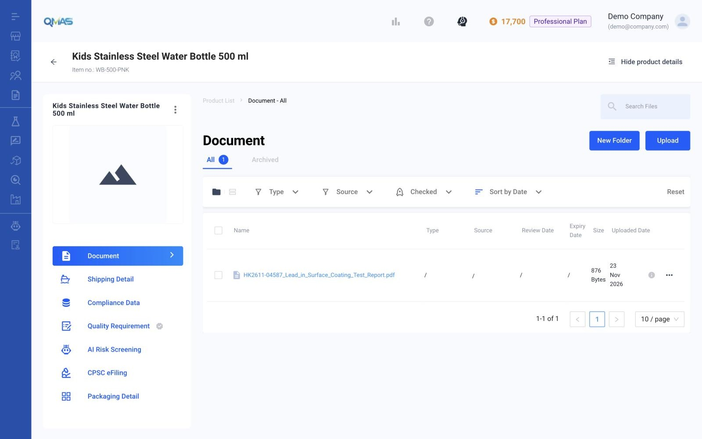
Tick one or more files to open the toolbar:
| Action | What it does |
|---|---|
| Set Data | Add compliance data (test, certificate or other) from this file. |
| Set Dates & Reminder | Set issue, expiry and review dates and an email reminder. |
| Archive | Move the file to the Archived tab. |
| Download | Download the file. |
| Share | Create a share link with an expiry period. Copy it or send it by email. |
| Rename / Edit Type | Change the file name or document type. |
| Move | Move the file to a folder. |
| Remove | Remove the file. |
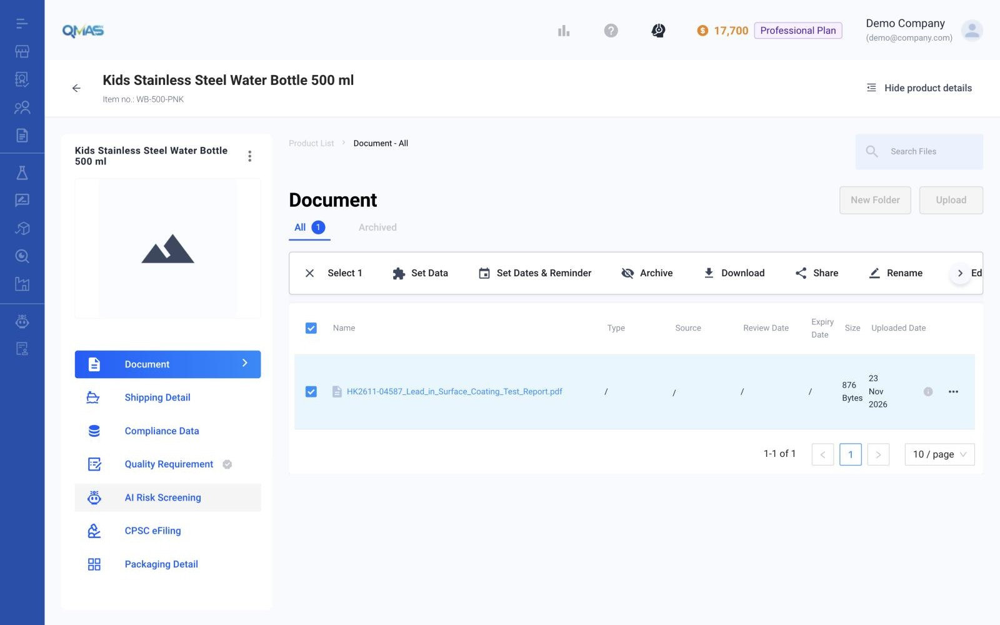

2. Shipping Detail
Shows the length, width, height, gross and net weight, quantity and barcode for the Selling Unit, Inner Carton and Outer Carton. To change them, click ⋮ next to the product name → Edit product and update Shipping Information.
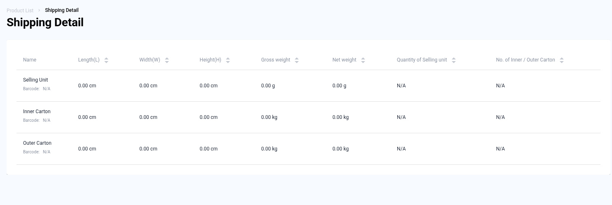
3. Compliance Data
Three sections: Test Data, Certificate Data and Other. Click Add Data (or Add once a section has records).

Test Data records one test result:
- Result (required): Passed, Failed or Report As Is.
- Export Market (required). For US eFiling, choose United States (CPSC eFiling submission).
- Legislation, Test Item & Citation (required): type a keyword such as “lead” and pick the test item from the list.
- Report ID, Issue Party (required), Expiry Date and Test Date / Report Date.
- Link the report under Existing Product Document (a file already on the product) or New Document (upload a new file).

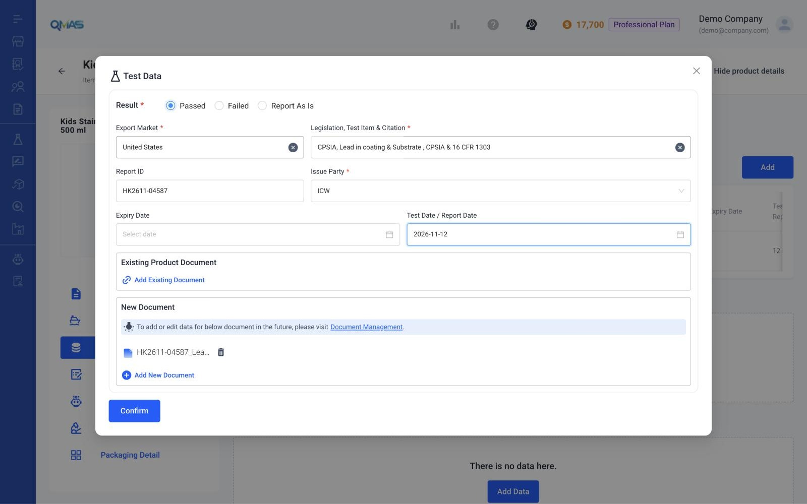
Click Confirm. QMAS shows “Data Created” and the record appears in the Test Data table with its export market, legislation, test item, citation, report ID and issue party.

Certificate Data works the same way. Fill in the certificate Type, Issue Party, Score / Overall Rating, Expiry Date and Certificate Date, then link the certificate file.
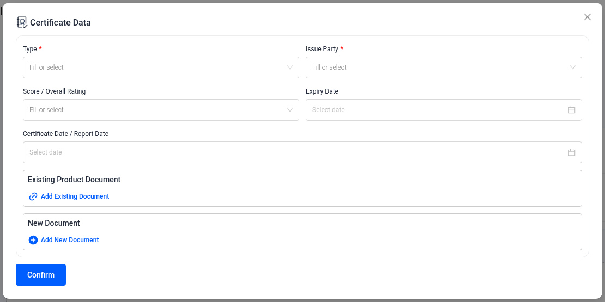
4. Quality Requirement
Quality Requirement lists what the product must meet, for example a chemical test or a physical test. Each requirement has a Type (the group) and a Name. You can attach compliance data to a requirement as proof, mark it as completed, and send the requirements to Product Testing or Document Review.
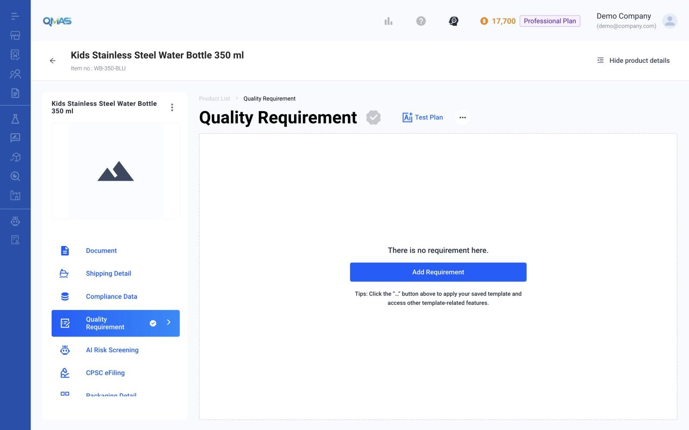
4a. Add a requirement yourself
- Click Add Requirement (or Add at the top right once the list has items).
- Type: pick an existing type, or type a new one and choose + Create “…”. Example: *Chemical Testing*.
- Name: pick a name from the list for that type, or type a new one and choose + Create “…”. Example: *Lead in Surface Coating (16 CFR 1303)*. Picking a different Type clears the Name.
- Tick Mandatory if the requirement must be met, then click Confirm. QMAS shows “Requirement Created”.
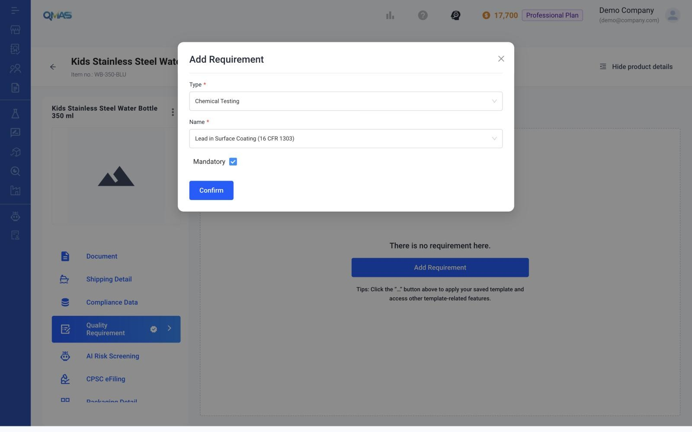
Requirements are grouped by Type. The number next to the Type is how many requirements it has, and a red * marks a mandatory requirement.
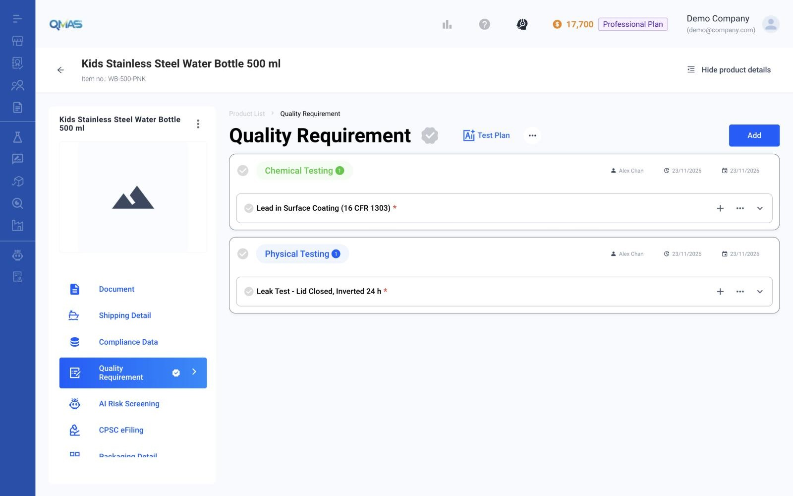
4b. Reuse requirements with templates
Click ⋯ next to the title → Templates:
| Option | What it does |
|---|---|
| Apply Template | Search for a saved template, use View to preview it, then click Apply. All its requirements are added to this product. |
| Save As Template | Save this product's requirements as a template. Type a new name and choose + Create “…”, then click Confirm. QMAS shows “Template saved”. |
| Manage Templates | See and manage your saved templates. |
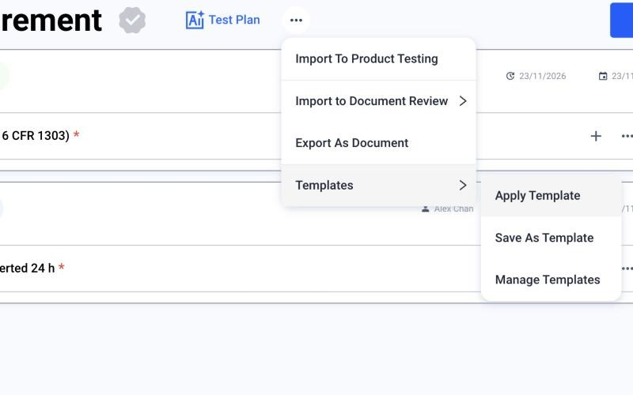


After you click Apply, QMAS shows “<template name> applied” and the template's requirements appear in the list.
4c. Attach proof and complete a requirement
- Click + on a requirement to open Attach Compliance Data. Choose the Test Data, Certificate Data or Other tab, tick the records and click Confirm. QMAS shows “Data Added”. If a record you just added is missing, click Reload Data. To add new data, go to the Compliance Data tab first.
- The attached data appears under the requirement. Click ⌄ to expand or collapse it, and the bin icon to detach it.
- Click ⋯ on a requirement for Edit, Duplicate, Upload Document, Mark As Completed and Remove.
- Mark As Completed shows “Requirement Completed” and turns the requirement’s tick green.


4d. Send requirements to a job
- ⋯ → Import To Product Testing: click Select on each requirement (or Select All), then click Confirm to Create Job. Product Testing → Request Quotations opens with this product added, and the requirements appear under Quality Requirement in step 2.
- ⋯ → Import to Document Review → Create Job or Create Job for supplier: opens the matching Document Review form for this product.
- ⋯ → Export As Document: exports the requirement list as a document.
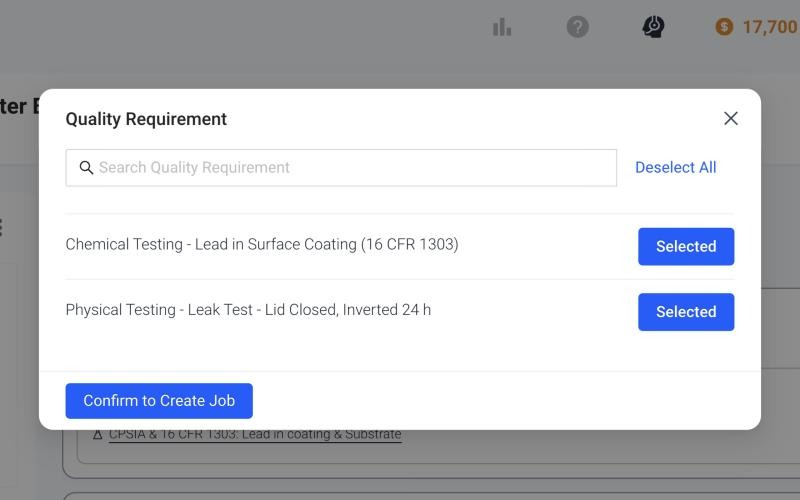
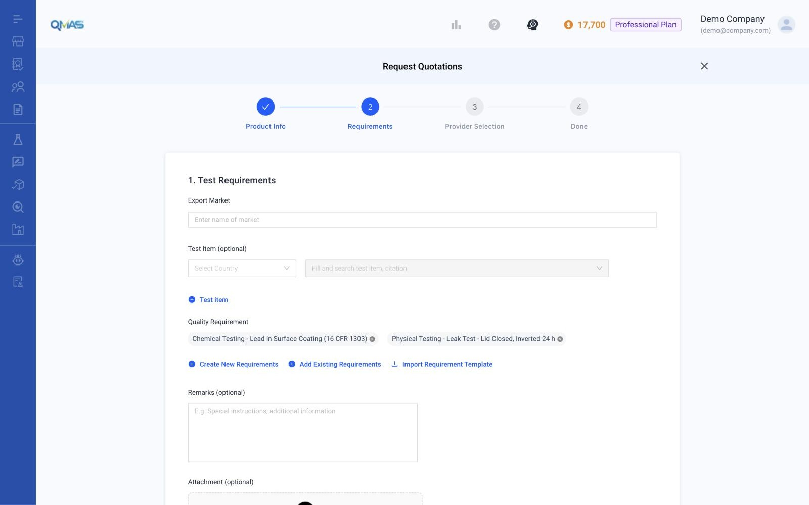
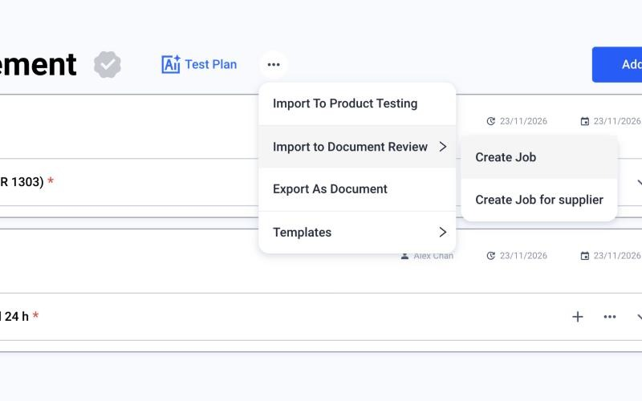
4e. Test Plan (AI)
Click Test Plan to let AI suggest a test plan. Fill in the Product Description (more detail gives better results), Import Country and Product Intended Used By, upload up to 6 product images, then click Generate Test Plan.

5. AI Risk Screening
Lists the AI screenings for this product. Click Add to start one. The pop-up and results are explained in the AI Insight guide.
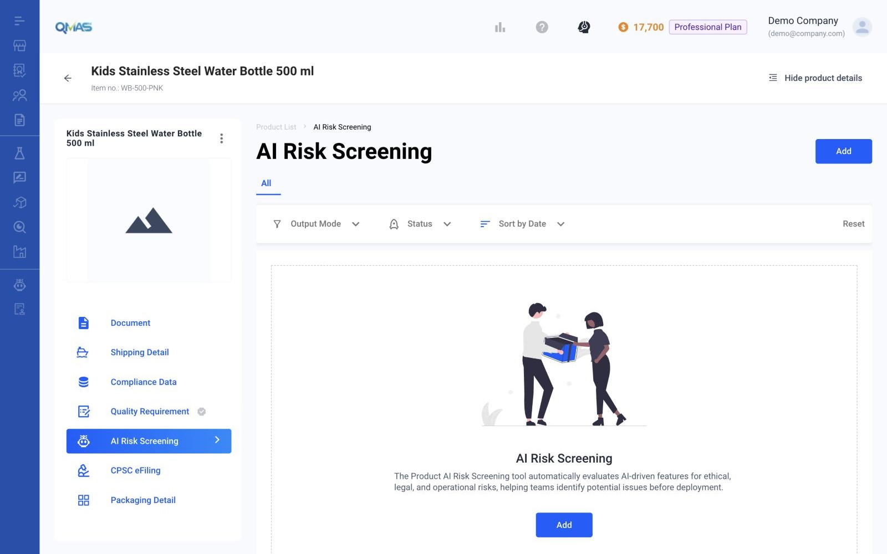
6. CPSC eFiling
Shows the eFiling Log for this product. Click Submit eFiling to create an eFiling. Before you can sync with CPSC, add your API Key and Secret Key in Company Profile (link in the grey note). The full flow is in the eFiling guide.
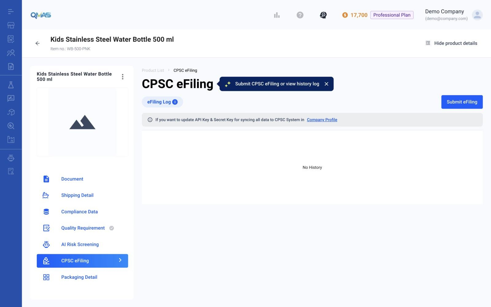
7. Packaging Detail
Lists the packaging components of the product. Click Create Packaging Component and fill in:
- Basic Information: name and description (required), identification no., function, legal role, weight, material type and name, status (Active, Inactive or Draft), and packaging images.
- Dimension, Additional Information, Supplier Linkage and Technical Documentation (expand each section).
Click Confirm. Use the Status filter to show active, inactive or draft components.
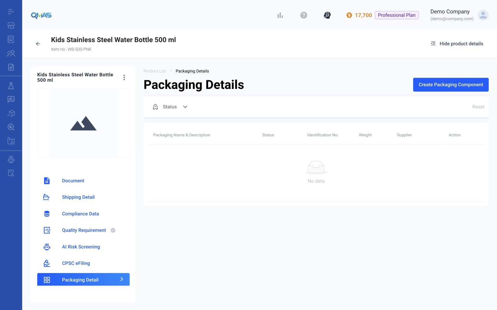
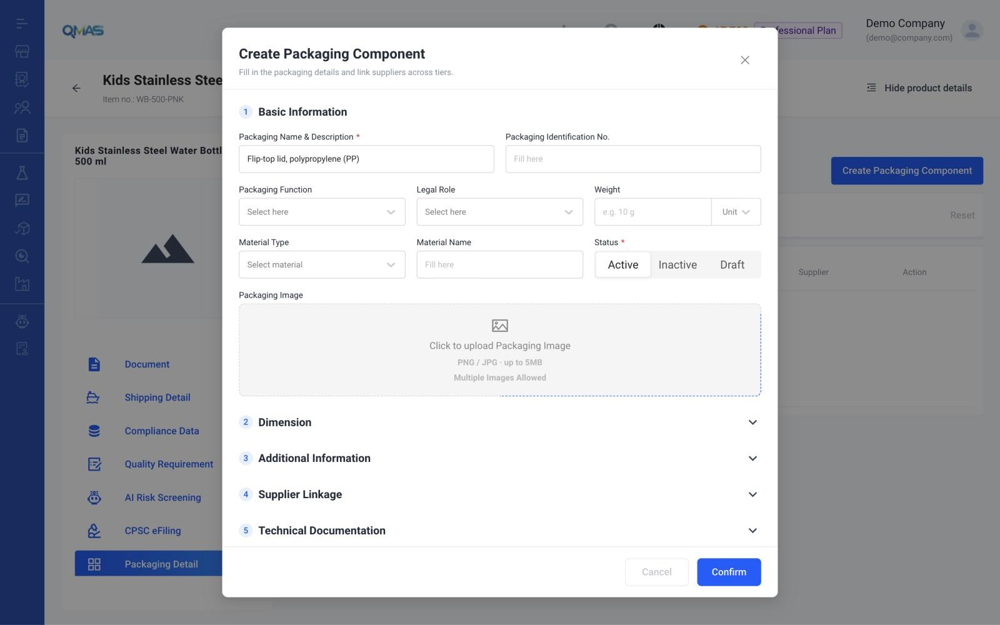
8. Import products in bulk
On the Product Management list, click Import Product. Download the ICW Product template (download here), fill it in, upload the Excel file (one file at a time), then click Next. Only the ICW template can be used.

Tips
FAQ
- How do I add a test result to a product?
- Open the product → Compliance Data → Test Data → Add Data. Fill in Result, Export Market, Legislation/Test Item, Issue Party, link the report, then Confirm.
- How do I share a product document?
- Open the product → Document, tick the file, click Share, choose the link expiry, then Copy or By Email.
- How do I add quality requirements to a product?
- Open the product → Quality Requirement → Add Requirement, or ⋯ → Templates to apply a saved template.
- Where do I record packaging information?
- Open the product → Packaging Detail → Create Packaging Component.
- How do I import many products?
- On Product Management, click Import Product, download the ICW template, fill it in and upload it.
- How do I reuse quality requirements for many products?
- Open a product → Quality Requirement → ⋯ → Templates → Save As Template. On other products use ⋯ → Templates → Apply Template.
- How do I prove a requirement is met?
- On the requirement click +, attach the test or certificate data, then ⋯ → Mark As Completed.